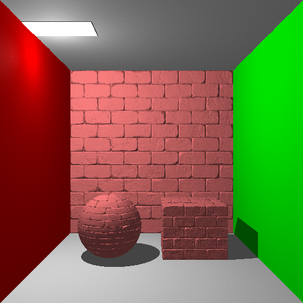
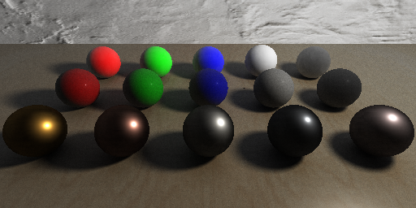

CS488 Project: Battlestation
For my CS488 project, I decided to improve on my ray tracer from assignment 4, starting
with the easy objectives, then implementing an approximation of global illumination through
path tracing, then hopefully easily porting over the features to my path tracing implementation.
Basic Cornell Box
To start off, I made a basic cornell box as a test scene.
Texture Mapping
Introduce uv coordinates to meshes and using math to calculate
uv's for primitives.
Bump/Normal Mapping
Same as texture mapping but also calculate tangents and bitangents with bitangents
going in the positive u direction and bitangents going in the positive v direction.

Reflection
Bounce rays off of "reflective" surfaces that are defined by the material reflected
by the angle of incidence to the normal.
Refraction
Use Snell's law to bend rays of light proportional to refractive indexes, and
in the cases where the angle of incidence is greater than the critical angle between the
two mediums, there is total internal reflection.

Adaptive Anti-Aliasing
Utilize edge detection Sobel-Feldman edge detection algorithm, then perform
supersampling on pixels where there is an edge beyond a certain threshold


Depth of Field
Implement "blur" by introducing an aperture to the render settings to mimic a camera with
a lens rather than a pinhole camera. Instead of using the "eye" all the time, use many points
sampled on the aperture modelled as a unit disk, then send a ray out from that sampled
point to the lookat, the focal point, and average the results.
This means that all objects not lying near the focal plane
will appear blurred since the rays don't converge at different points.


Soft Shadows
Implement area light sources to represent how lights work in real life, then instead of
using one shadow ray per point light instead sample many points on the spherical light's
surface then average out the contributions of the shadow rays created from those points.
Animation
Animate objects within the scene file by introducing keyframes through
matrix transforms, i.e. keyframe n+1 is after transform x. Interpolation
is done linearly and with Bezier curves to get the ease-in ease-out effect.
Path Tracing
Path tracing was implemented to better approximate global illumination, creating
effects like soft shadows, color bleeding, and caustics for "free," giving scenes
less of a flat appearance from lighting. This is accomplished by bouncing rays off of surfaces
at each surface interaction in accordance with a Bireflectional distribution function depending
on the material of the object, which averaged over many samples performs Monte Carlo integration
over all possible outcomes and will theoretically converge to Kajiya's "rendering equation."
Along with path tracing, I implemented a simple microfacet BRDF for specular light interactions
using a variation of the Cook-Torrance model. I also used a sampler that
is more uniform than a random sampler to reach convergence faster. All of the above
features were also ported to the new path tracer, with some being more difficult than
others.
Some things I also included to improve on the path tracer were Russian Roulette termination,
using direct + indirect lighting, and using importance sampling to reduce noise.
Base Cornell Box
The new cornell box. Notice the color bleeding effects on the sides of the floor,
back wall, ceiling, and the "egg" sphere.
Texture Mapping & Depth of Field
Texture mapping requires no changes. Depth of field required many samples to reach
convergence in the path tracing portion for each aperture sample.
Bump Mapping
Reflection & Refraction
Reflection requires no changes. Refraction now has (weak) caustics from
the light rays going through the refractive medium
Animation

Final Scene
I contructed this scene based off of my own desk during graphics
assignments :)
Rendered at 1024x512, 512 samples per pixel, with AAA to remove jaggies.
With AA
Without AA
Original RT
Bonus Objectives
I implemented a few bonus objectives to speed up rendering times and
to overall improve the asthetic of the renders.
Multithreading
I implemented multithreading since ray tracing is a highly parallelizable task, using C++11 threads.
Here is a graph of log2(threads) vs performance for rendering macho cows
at high resolution on a 4 core Macbook Pro:
Spatial Partitioning with kd-trees
Each mesh's triangles are split during a preprocessing step using kd-trees,
where at each step the polygons are split on the midpoint of all the polygons
in the mesh with a plane determined by a simple heuristic, continuing until
maximum depth has exceeded or there are too few polygons in one leaf.
When performing intersection, instead of checking through every polygon of the mesh, we can now
instead check for the kd-tree node's left and right bounding boxes,
iterating through both only if the ray intersects both the boxes, which can potentially
reduce mesh intersect from an O(n) operation to an O(logn) operation.
Once at the leaf of the kd tree, perform normal triangle intersect on the small
number of triangles bounded by that leaf's bounding box.
Here is a the performance of rendering an IcoSphere from blender with varying
amounts of subdivision:
Phong Shading
Phong shading creates smooth surfaces from lighting instead of flat ones. This is done
through normal interpolation, given a normal for each vertex of a triangle during intersection.
This also requires meshes that have vertex normals as opposed to face normals, something that is
easily accomplished in Blender.
Microfacet BRDF & Glossy Reflection
I implemented a specular microfacet BRDF through a variation of Cook-Torrance, which aims to
model materials as if they had little microfacets or imperfections at the microscopic level.
The equation looks like this:

The F term represents how metallic the object is, as in, how it reflects light between different angles.
The D term represents the normal distribution of the microfacets, where the more microfacets
there were the more probability light is scattered. The G term represents the masking/shadowing of
microfacets, where a higher value means more faces are blocked by each other.
The F term is Schlick's approximation of the Fresnel equation, the D and G terms are from Trowbridge-Reitz,
referred commonly as GGX.

With the BRDF, it becomes easy to tune a few parameters like roughness to create a glossy reflection effect.